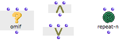
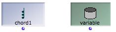

OpenMusic DocumentationHiérarchie de section : OM 6.6 User Manual > Visual Programming I > Boxes > Other Boxes
OpenMusic DocumentationHiérarchie de section : OM 6.6 User Manual > Visual Programming I > Boxes > Other Boxes
Navigation : page précédente | page suivante
Attention, votre navigateur ne supporte pas le javascript ou celui-ci à été désactivé. Certaines fonctionnalités de ce guide sont restreintes.
Other Boxes
Other types of OM boxes, related to more advanced programming concepts are detailed in specifically sections of the Advanced Programming section.
Control Boxes
Control boxes are specific functions, which allow to choose between several operations to execute, and or to control the execution of a patch :

About Control Boxes
Instance Boxes and Global Variables
Instance boxes and global variables refer to permanent objects used as reference material.

About Instances and Global Variables
Références :
Plan :
Navigation : page précédente | page suivante
A propos...(c) Ircam - Centre Pompidou